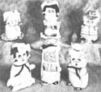
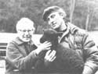
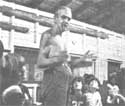
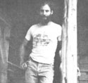
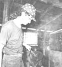

In celevration of little-known MOTHER-type folks from all over.
Fifty-year-old Buzzy Sisco has been to. tally disabled since early childhood ... the victim of a series of crippling diseases. As a result of Buzzy's bouts with spinal meningitis, encephalitis, erysipelas, and cerebral palsy, he cannot read, write, or speak coherently ... but Buzzy can create!
Buzzy Sisco-with the help of his two sisters-makes a living sewing cotton dolls ... fashioned from a pre-Civil War family pattern, handed down from generation to generation. Buzzy crafts his dolls just as they were made in the days of the covered wagon: Each toy is made complete except for the stuffing ... which is left up to the child as a lesson in resourcefulness and responsibility. The dolls encourage neatness as well, because each toy has a four-pocketed apron to hold and organize its young owner's coveted trinkets and treasures.
These handmade (no two are exactly alike) dolls are available in two styles: a girl doll, Gert, and a boy doll, Bert. Gert boasts pigtails, a ruffled apron, and an old-time duster hat. Bert features tousled hair, a cobbler's cap, and shoes which peek out from his plain cobbler's apron. Each toy is crafted from brightly colored cotton, burlap, and felt ... with all parts safe for even the youngest child. And-somehow-the prairie dolls' ingenious makeup manages to cross every barrier of race and nationality ... so that each doll is representative of the people of all the world.
Buzzy sells his 10-inch tall homemade playthings for $5.99 each ... and 12-inch dolls for $6.99 (all orders are postpaid). And a handcrafted, miniature, felt horse blanket-which can be used as a bookmark or desk/table ornament-is included as a bonus with every two dolls purchased. (Buzzy's prairie dolls can be ordered from: Buzzy Sisco, c/o Sisters Sisco, P.O. Box 148, Healdsburg, California 95448.)
Buzzy's dream is to live on a tract of land that is truly close to nature ... complete with garden church, bird sanctuary, animal preserve, and abundant vegetation: a homestead to house and be tended by the physically and mentally handicapped. And- with the profits from the dolls that Buzzy makes and sells- the Sisco family hopes someday to turn that dream into a reality! -Bertha M. and Samuelion 0. Sisco.
For nearly three decades now, Ross and Paula Simmons have been literally "weaving the tapestry of their life" against the background of their small farm homestead on the Kitsap Peninsula of western Washington. As full-time craftspeople, Paula and Ross tend an unorthodox flock of black-fleeced sheep. . . which yield the product that the two spin and weave by hand into high-quality clothing and artistic afghans.
When the Simmonses first "dropped out" of mainstream society-shortly after World War II-their chances for success appeared pretty slim. "We desperately wanted to get back to a simpler way of life," says Paula. "But, like most people, we didn't know that making life simpler is not quite as easy as it sounds." At first the two were only part-time back-to-the-landers: The tiny five-acre homestead they'd bought with their accumulated savings boasted only a few chickens, some rabbits (invariably set free at butchering time), and a meager vegetable garden. So, every day, the pair commuted by ferry to outside jobs in nearby Seattle.
"We certainly made a lot of mistakes in our time," Paula laughs good-naturedly, "but we learned a lot by doing . . . and- fortunately -we found that some good eventually comes of everything." A case in point was the Simmonses' single wandering homestead goat, which the couple tried in vain to keep from "browsing" through the hedgerows. Ross and Paula's lack of success with the beast prompted them to replace the animal with a more docile black sheep ... and, at the sheep's first shearing, the couple's down-home thrift compelled them to put the wool to good use.
"When you're living at a subsistence level," Paula explains, "even your hobbies have to pay for themselves" . . . so the two eagerly read everything (though there wasn't much) that was then available on handspinning and -weaving. Ross then built a lap loom which Paula used to turn out a dark-wool scarf ... the scarf was sold. . . and the money was used to buy a larger loom. Ross and Paula were so attracted by the beauty of the dark wool they'd woven that they proceeded to buy two old black ewes, which later lambed. The couple then built up the flock ... learned the ins and outs of marketing crafts ... and- finally- entered the weaving business full time.
Today, Paula has two successful books on sheep raising and woolcraft to her credit: Raising Sheep the Modern Way and Spinning and Weaving With Wool. [Available from any good bookstore for $5.95 and $9.96 respectively. . . or for the above prices, plus 950 shipping and handling, from Mother's Bookshelf, P.O. Box 70, Hendersonville, North Carolina 28739.MOTHER.] Paula's spinning and weaving workshops have also become popular, as have the dark-wool afghans, hats, vests, and sheepherder's jackets that she and Ross weave. But-despite the great demand for the couple's woven products-the two still faithfully devote all the time and attention that's necessary for creating each and every piece.
Ross and Paula view their life's work together somewhat philosophically: "The 'good life'," they say, "means doing whatever it Is that you really want to do." And it's apparent to all who know them that Ross and Paula Simmons have been doing just that! -Forest Rambo.
In 1940 Ken Webb found himself totally disenchanted with the existing system of education in Vermont. He'd been teaching school and working in summer camps for a number of years ... and was convinced there was a better way of dealing with youngsters than to dress them in uniforms, feed them unhealthy foods, and teach them to compete against each other for the sake of a ribbon or an empty title.
Ken had the idea that children would benefit more from a noncompetitive environment ... where they could grow their own food in organic gardens, build their own shelters, make their own music, and invent their own amusements. So he moved to Vermont's Plymouth Valley, with a little money, a lot of energy, and a small group of boys ... and transformed his Quaker-inspired dream into a reality: a boys' camp called Timberlake.
At first the local folks thought Ken mighty strange when he openly recruited campers from minority groups (years before the civil rights movement). And campers' parents were a bit uneasy about the nonconformist Timberlake diet: The youngsters grew much of what they consumed and did not eat the traditional "meat with every meal". But Webb persisted and Timberlake grew ... and soon Ken and his wife Susan had established a girls' camp-called Indian Brook-as well.
Soon after, two Indian culture camps developed ... where youngsters studied the American Indian way of life and respect for the earth. Then, a fifth Webb venture resulted in a boys' hiking camp with down-to-earth ecology and conservation programs. And, finally, Ken set out to organize a series of environmentally oriented activities for older teens ... as well as some special programs for college-aged folks.
Today- thirty-eight years and six camps later-Ken Webb serves as elder/ advisor to the Farm Wilderness Foundation ... which oversees the operation of his camps' programs and the administration of camp-owned grounds. He spends much of his time writing, gardening, and canoeing over the lake where three of his camps are now located. Most often Ken visits Timberlake, where it all began . . . and tells tales to each new group of youngsters that the summer months bring.
Webb calls himself an "incorrigible idealist": "My hopes for the future spring from the young," he says. And it is for the young that Ken Webb has invested so much of his life ... and shared so fully his love of the earth,-Tom Mcguire.
What's a nice New York doctor like Neil J. Kellman doing in a backwoods location like Lewis County, Tennessee? It started when Neil received his M.D. from Albany Medical College and was invited to set up practice in Lewis County's local hospital. Neil discovered, however, that acceptance of that position would require him to join the AMA and maintain malpractice insurance . . . so he opted, instead, to create a county clinic and maternity center of his own.
The clinic began (and remains) in an old remodeled farmhouse ... but was soon equipped with examining quarters and two maternity rooms designed for homelike delivery. And, in the first five months of the clinic's operation, the center's midwives- assisted, when needed, by Dr. Kaltman- delivered a total of 70 babies. (In addition to day-to-day treatment and diagnosis, Dr. Neil trains midwives and lay medical students to help him with his workload.)
Neil Kellman habitually treats health problems in the most natural way possible ... using herbs, acupuncture, and other such techniques in an effort to keep shots, surgery, and drug-oriented treatment to a minimum. (He strongly believes that acupuncture is a much more effective healing medium than many conventional medical practices.)
Patient care for Dr. Kellman involves educating each individual in the prevention of disease through proper nutrition, exercise, and the development of a positive state of mind. Neil also conducts field trips into the nearby countryside for people who wish to learn to identify herbs for both food and healing purposes. And-in a recent talk at the local Senior Citizens Nutrition Center-the doctor awakened his audience to the potential health hazards of highly processed, overcooked, and inappropriate foods, Neil Kellman is a nonconformist when it comes to matters of finance, too: His fees are a reflection of what each patient can afford. And-since so many elderly folks in the area are caught in the squeeze between fixed incomes and the inflationary spiral-senior citizens are treated on a donation-only basis.
What, then, do the folks of Lewis County, Tennessee think of their resident alternative to the medical establishment? The community consensus is clear: "Dr. Neil is a gentle man and a kindred spirit ... with a sheepskin to satisfy the public, " the folks say. "And here in the heart of middle Tennessee ... we count him as one of our blessings! "-Joy Costa.
There were a lot of exhibits crammed into the New Orleans, Louisiana HerItage Festival two years ago last April: food, handicrafts, and sometimes even music. But-Ric Moorhouse stood out as perhaps the most serious of the exhibitors, for he was displaying the products of a notion that had led him to a "better way of life" . . . from the promise of a successful business law career to the life of a blacksmith.
At the age of 25, Ric held a B.S. degree in business administration from Southern Methodist University in Dallas, Texas ... and was studying business law at Louisiana State University in Baton Rouge. And then one day-as he leafed through a craft book given him by a friend-the name of the Turley Forge School in Santa Fe, New Mexico suddenly caught his eye. "The idea just knocked me over," says Ric. But it took him a year in line on the waiting list- from 1974 to 1975-before he was even admitted to the six-week program.
Ric did complete the course, though, and-with the basics of the subject under his beltsettled down near Arnaudville, Louisiana in a house with a small abandoned blacksmith shop. Then he set up business with the beat tools available: century-old pieces (two anvils, a pair of hand-forged tongs, a handcranked air blower, and a leg vise) obtained from craftsmen of yore who'd retired or passed on. (Ric's large, steel-faced anvil-for example -belonged to a blacksmith who retired back in 1927.)
Ric feels fortunate to have two old-time blacksmiths in nearby communities, men who see their skill as a vanishing art and are glad to give Ric all the help and advice he needs as he masters. the trade ... and as the surrounding farming community comes to depend on him more and more to fulfill its everyday blacksmithing needs.
People still ask Ric what prompted his drastic change from business law to blacksmithing, and he always answers frankly. "I'm not at ease in the cold of ten-story, steel, brick, and concrete structures," says Ric. "I can relate much better to the soil and to the people who till it ... and," he adds, scooping up a handful of dirt from the sod floor of his blacksmith shop, "I don't mind getting my hands dirty." Press Ric further for a reason for his change of lifestyles and he'll explain: "It's simply the way the pendulum swung. It all began as just a notion ... but it developed into a way of life better than I'd ever planned for." -D. J. Young.
Know someone-whether sung or unsung-who's doing something of merit in wholistic gardening, alternative energy, environmental conservation, self-employment, low-cost house construction, or any of the other fields of endeavor featured in MOTHER? A factfilled, 450- to 500-word essay that describes that person, accompanied by a sharp, glossy, black-and-white photo, will-upon being accepted for use in PROFILES-earn you a fast, flat $50. Send it to: PROFILES Editor, THE Mother Earth News, P.O. Box 70, Hendersonville, N.C. 28739.
|
 |
 |
 |
|
 |
 |
|